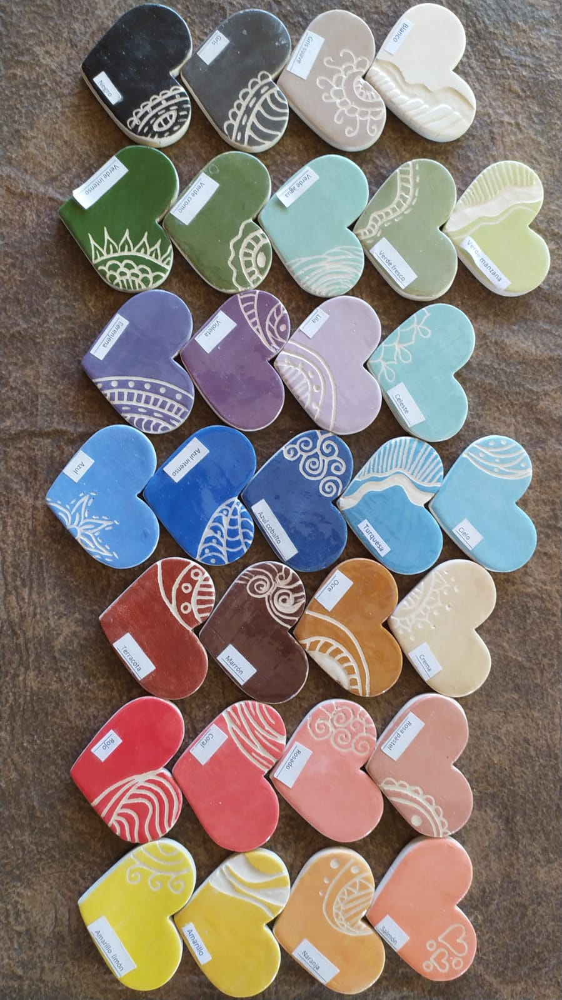

¿Quiénes somos?
Engobes patagónicos es un emprendimiento familiar dedicado a la fabricación y comercialización de engobes para cerámica. El proceso de creación de los mismos es totalmente artesanal. Además de los engobes de creación propia, también contamos con diferentes insumos para la venta.
